GitHubからWindows用ZIPを取得して展開し、初回だけ標準モデルをダウンロードします。その後、入力と見た目を設定して「開始」を押します。
GitHubからダウンロードする
https://github.com/tattoqq9/virtual-headを開き、右側の「Releases」から先頭に表示される新しい版を開きます。ReleaseのURLを直接受け取った場合は、そのページから始められます。
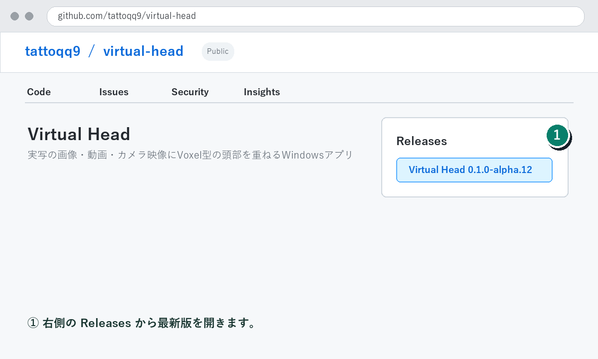
- 1「Releases」を開き、新しいVirtual Headの版を選びます。
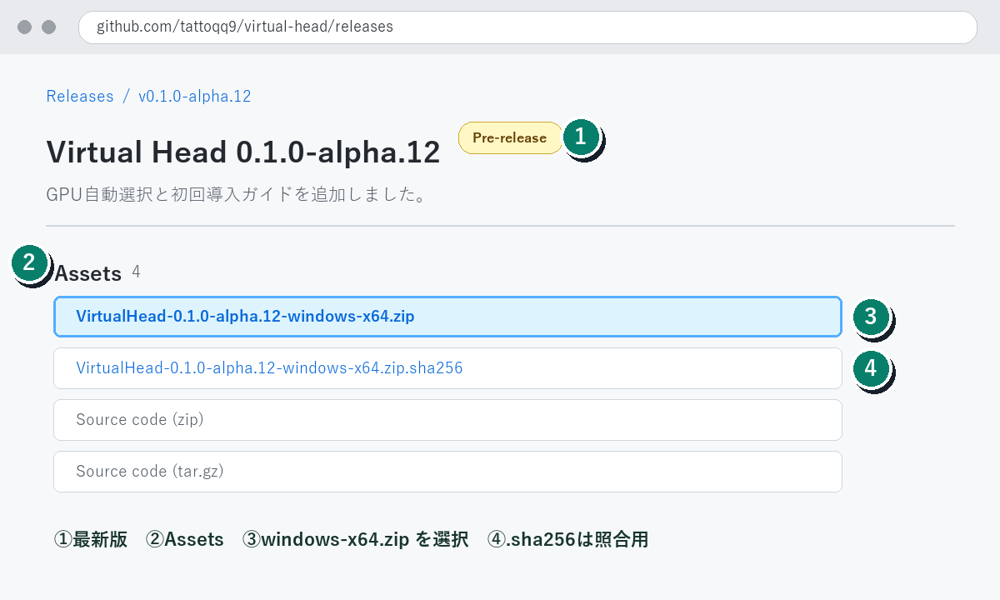
- 1最も新しいバージョンであることを確認します。
- 2Assetsが閉じている場合はクリックして開きます。
- 3
VirtualHead-バージョン-windows-x64.zipをダウンロードします。これがWindowsアプリ本体です。 - 4
.zip.sha256は改ざん確認用です。「Source code」はアプリ本体ではありません。
ダウンロードしたZIPを右クリックして「すべて展開」します。展開後のVirtualHead.exeと_internalフォルダは同じ場所に置いたまま使用してください。
初回のSmartScreen表示
現在のプレリリースはコード署名前のため、「WindowsによってPCが保護されました」と表示されます。公式Releaseから取得したZIPであることを確認し、可能ならRelease記載のSHA-256と照合してください。
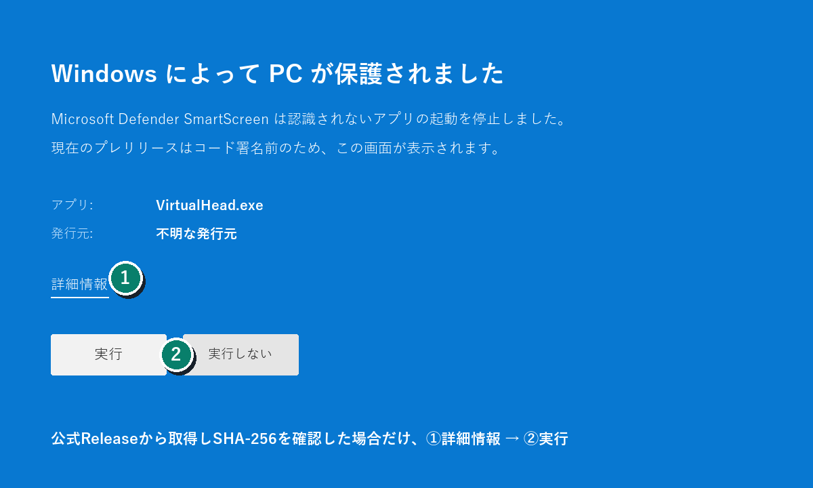
- 1確認できたファイルだけ「詳細情報」を開きます。
- 2アプリ名が
VirtualHead.exeであることを確認して「実行」を押します。
警告を解除する手順
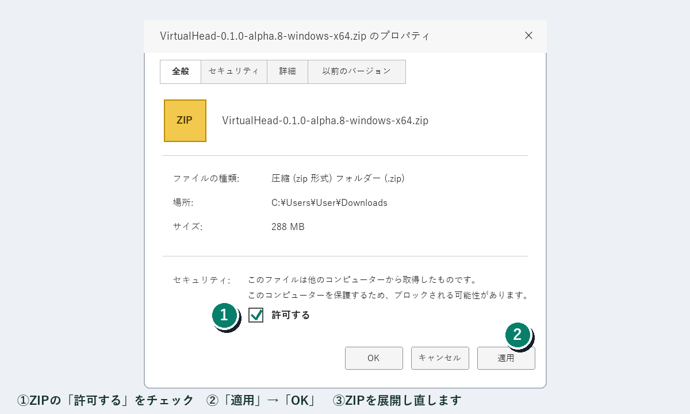
- 1「許可する」にチェックします。
- 2「適用」→「OK」を押してからZIPを展開し直します。
- GitHubの公式Releaseから
VirtualHead-バージョン-windows-x64.zipと.zip.sha256を取得します。 - PowerShellで
Get-FileHash .\VirtualHead-バージョン-windows-x64.zip -Algorithm SHA256を実行し、Release記載値と一致することを確認します。 - ZIPを右クリックして「プロパティ」を開きます。全般タブ下部に「許可する」または「ブロックの解除」がある場合はチェックし、「適用」→「OK」を押します。
- 解除したZIPを「すべて展開」し、
VirtualHead.exeを起動します。 - SmartScreen画面が表示された場合は「詳細情報」→「実行」を選びます。
プロパティに解除項目がない場合は、SHA-256確認後にPowerShellでUnblock-File -LiteralPath .\VirtualHead-バージョン-windows-x64.zipを実行し、ZIPを展開し直せます。SmartScreen自体を無効にする必要はありません。
github.com/tattoqq9/virtual-headのReleaseから取得してください。画面全体
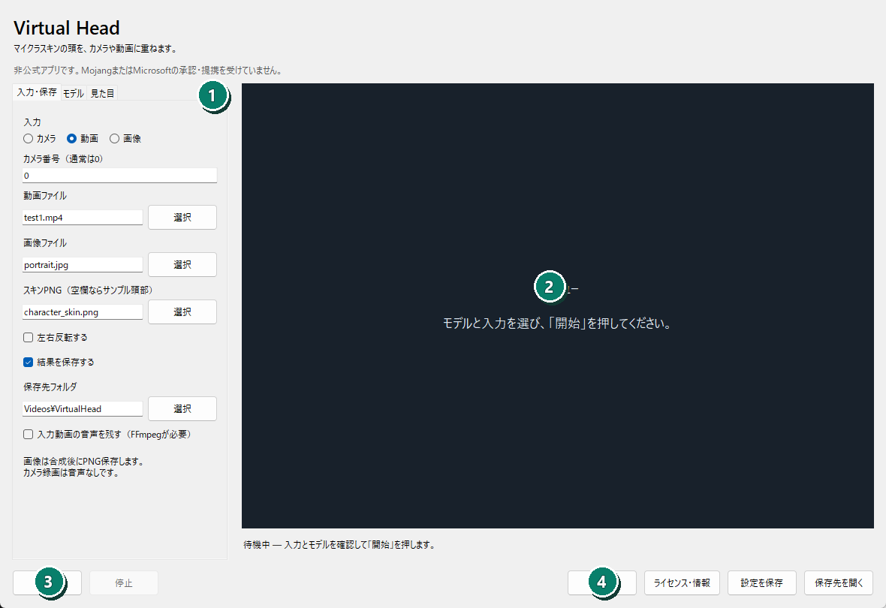
- 1左側のタブで入力、モデル、見た目を設定します。
- 2右側に処理中の映像を表示します。
- 3設定後に「開始」を押します。
- 4使い方、ライセンス、設定保存、保存先を開けます。
動画を処理する
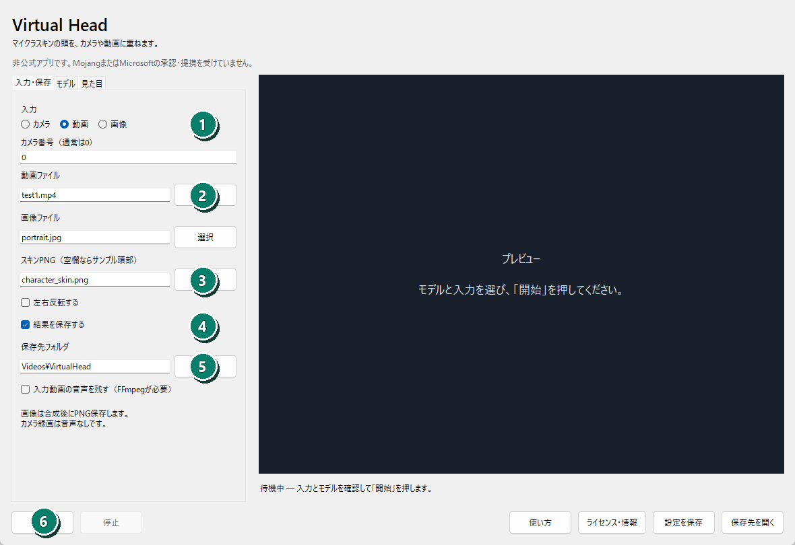
- 1入力で「動画」を選びます。
- 2処理する動画を選択します。
- 3使用するSkin PNGを選択します。空欄ならサンプル頭部です。
- 4ファイルへ残す場合は「結果を保存する」を有効にします。
- 5保存先フォルダを選択します。
- 6「開始」を押し、完了まで待ちます。
音声を残す場合はFFmpegを指定し、「入力動画の音声を残す」を有効にします。出力先にはoverlay.mp4、tracking.jsonl、run.jsonが作られます。
画像を処理する
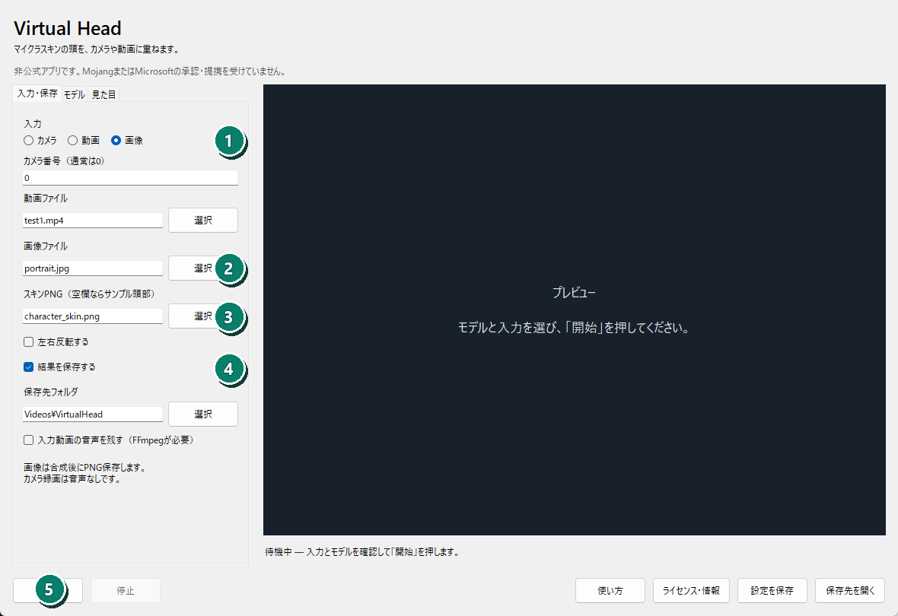
- 1入力で「画像」を選びます。
- 2PNG、JPEG、BMP、WebP画像を選択します。
- 3Skin PNGを選択します。
- 4「結果を保存する」と保存先を確認します。
- 5「開始」を押します。1枚だけ処理して自動終了します。
出力先にはoverlay.png、tracking.jsonl、run.jsonが作られます。
カメラで使う
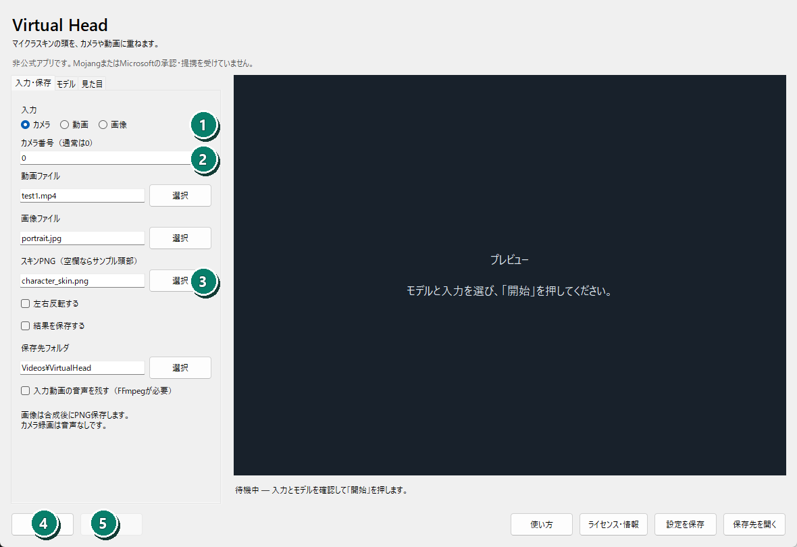
- 1入力で「カメラ」を選びます。
- 2通常はカメラ番号0を使います。
- 3Skin PNGを選択します。
- 4「開始」を押すとカメラが開きます。
- 5終了時は「停止」を押します。
録画する場合だけ「結果を保存する」を有効にします。カメラ録画に音声は入りません。
モデルを設定する
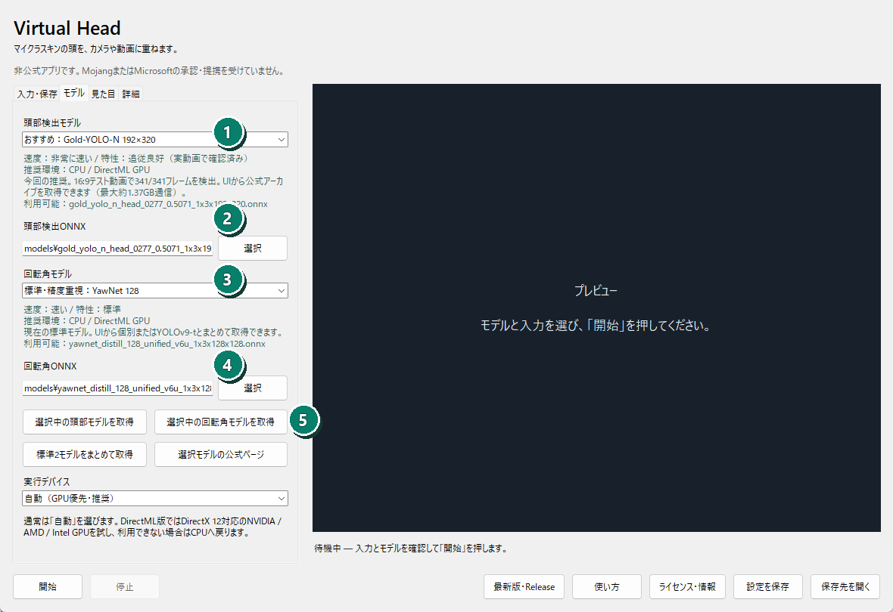
- 1取得済みの頭部検出ONNXを表示します。自作モデルを試す場合だけ変更します。
- 2取得済みの回転角ONNXを表示します。
- 3初回は「標準モデルをダウンロード」を押します。公式Releaseから約80MBを取得し、検証後に自動設定します。
- 4通常は「自動（GPU優先）」を使います。CUDAを利用できるNVIDIA PCではGPU、それ以外ではCPUへ自動で切り替わります。
- 5CUDA DLLが自動検出されない場合だけフォルダを指定します。
- 6Roll補助が必要な場合だけランドマークを有効にします。補助モデルは自動取得しません。
- 7音声付きH.264保存にはFFmpegを指定します。
頭の見た目を調整する
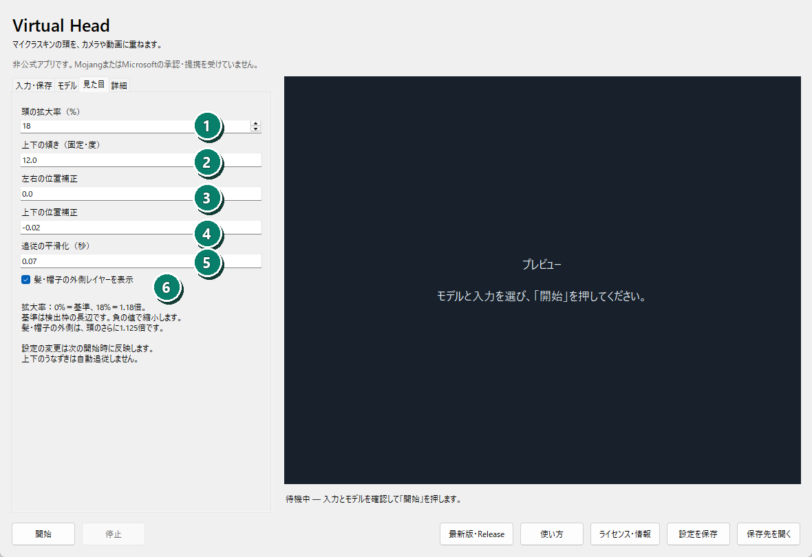
- 1頭の拡大率。初期値18%は検出した頭の基準サイズの1.18倍です。
- 2固定Pitch。頭の上面・下面の見え方を調整します。
- 3左右の位置ずれを補正します。
- 4上下の位置ずれを補正します。負の値で上へ移動します。
- 5追従の揺れを平滑化します。
- 6Skinの髪・帽子レイヤーを表示します。
開始・停止・保存
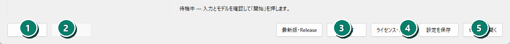
- 1処理を開始します。
- 2動画やカメラ処理を安全に終了します。
- 3この説明書を開きます。
- 4現在の設定を保存します。
- 5直近の保存先をエクスプローラーで開きます。
うまく動かないとき
開始できない
入力、頭部検出モデル、回転角モデルの選択を確認します。
GPUにならない
自動モードはCUDAを初期化できない場合CPUへ戻ります。NVIDIAドライバー、CUDA 12系、cuDNN 9系を確認します。
頭がずれる
拡大率、左右・上下位置、固定Pitchを少しずつ調整します。
診断ログは%LOCALAPPDATA%\VirtualHead\app.log、実行結果は出力先のrun.jsonにあります。
映像、画像、SkinはPC内で処理され、外部へ送信されません。標準モデルの取得を選んだ場合だけGitHubへHTTPS接続します。これは非公式アプリであり、MojangまたはMicrosoftの承認・提携を受けていません。